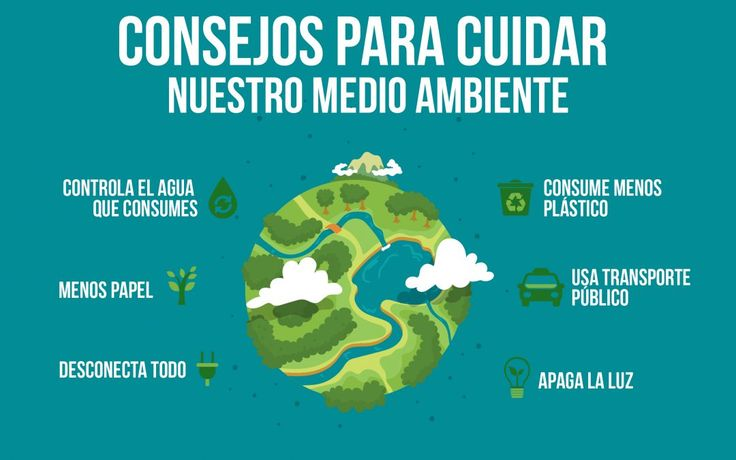

La ciencia que estudia el medioambiente
Todo lo relacionado con el medioambiente es estudiado por la ecología, una rama de la biología especializada en los seres vivos y en su interacción con el medio.
Los especialistas de esta disciplina tienen en la forestación una cuestión fundamental. Hay que tener en cuenta que los árboles cumplen funciones vitales para gran parte de la fauna existente y para los seres humanos. Tanto es así que son los principales productores de oxígeno de los ecosistemas terrestres.
Cada 5 de junio, el mundo conmemora el Día del Medioambiente. El objetivo es concienciar a la sociedad sobre la importancia de garantizar una protección duradera del planeta y sus recursos naturales.
